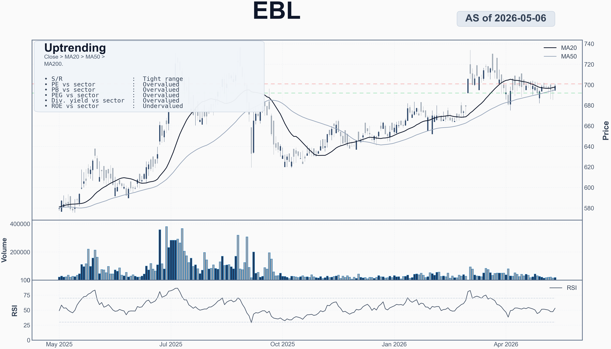
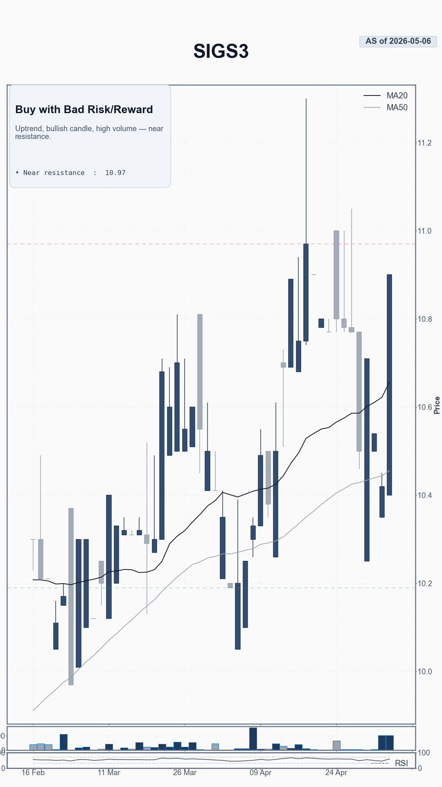

NEPSE watch list — daily screening, charts & publish automation
A production-style pipeline that ingests full-market adjusted OHLCV, layers fundamentals and technical rules, renders hundreds of publication-ready charts, stitches landscape and vertical reels, and optionally drives multimodal captions for social — end to end in Python.
ETL architecture
Extract
Multi-source ingestion
- Adjusted OHLCV for all tickers via the GitHub REST API (authenticated
contents→download_url), sourced from my adjusted-price repository. - Broad market indices from versioned raw GitHub CSV endpoints.
- Fundamental tables from NepseAlpha with browser-realistic headers, retry/backoff, cloudscraper fallback when anti-bot blocks plain
requests, and disk cache if live fetch fails.
Transform
Validation & analytics layer
- Price hygiene: drop rows with zero/NaN opens or closes; enforce strictly positive OHLC before any signal logic.
- Per-ticker time order; scale on the order of hundreds of thousands of bars across the universe pre–fundamental prune.
- Indicators: Wilder RSI (14) matching exchange-style smoothing, MA20 / MA50 / MA200, 3-day volume vs a 30-day rolling baseline (volume ratio).
- Structure: support / resistance engine on trailing windows — proximity % to levels, tight-range compression, bullish/bearish breakout flags — fed into JSON for downstream captioning.
- Fundamental universe filters for the market summary track (for example excluding zero financial-strength stars or “weak” ratio summaries).
Load
Artifacts & distribution
- Categorized screeners (uptrend / downtrend stacks, MA crosses, high volume + price up, bearish cross, tiered buy-watchlist) drive mplfinance renders into ordered PNG sequences.
- FFmpeg pipelines: landscape
market_tracker.mp4, 9:16 reels withcoverfit (no letterboxing), intro crossfades, dated thumbnails. - Optional Gemini multimodal pass: chart attachments plus structured JSON context (session date, screener counts, per-ticker snapshots) → Facebook / YouTube copy with template fallback.
- Upload hooks for YouTube Shorts and Facebook Reels APIs when credentials are enabled.
Screening & chart logic
Rules combine trend geometry (close vs MA stack), event-style crosses (including MA50 vs MA200), candle bias, relative volume, and S/R context. Outputs are partitioned for a fundamentally pruned market summary deck versus a technically tiered buy watchlist reel — same core data, different product surfaces.
- Deterministic filename conventions so video ordering and AI caption context stay in lockstep.
- Reel body merge then intro prepend; temp assets deleted only after successful mux — safe operational defaults.
- Operational runbook (
PIPELINE_AND_VIDEO.md) documents dimensions, visibility flags, and regression-prone merge settings.




.png)
.png)